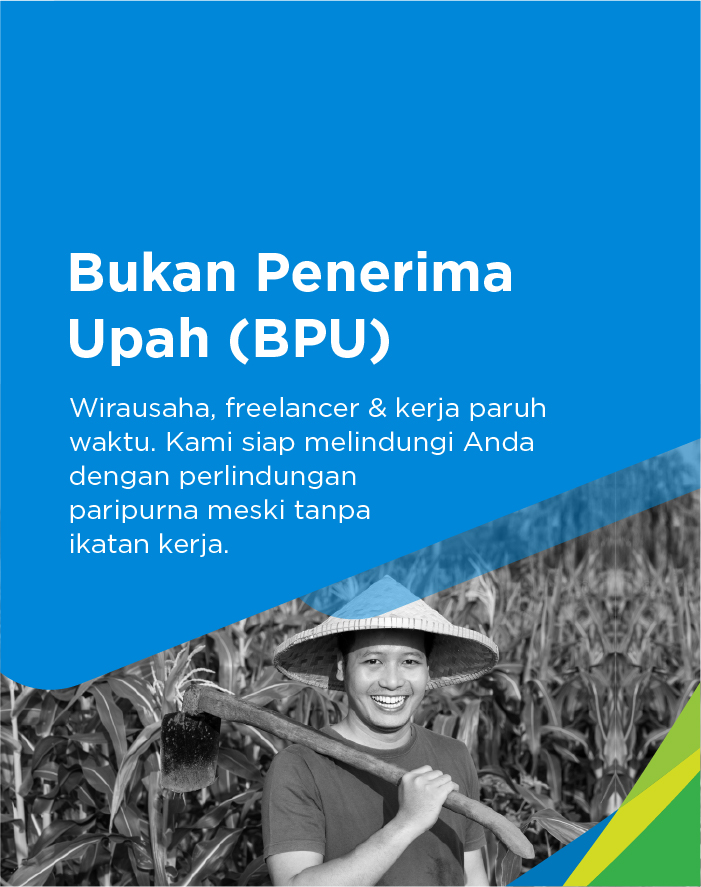
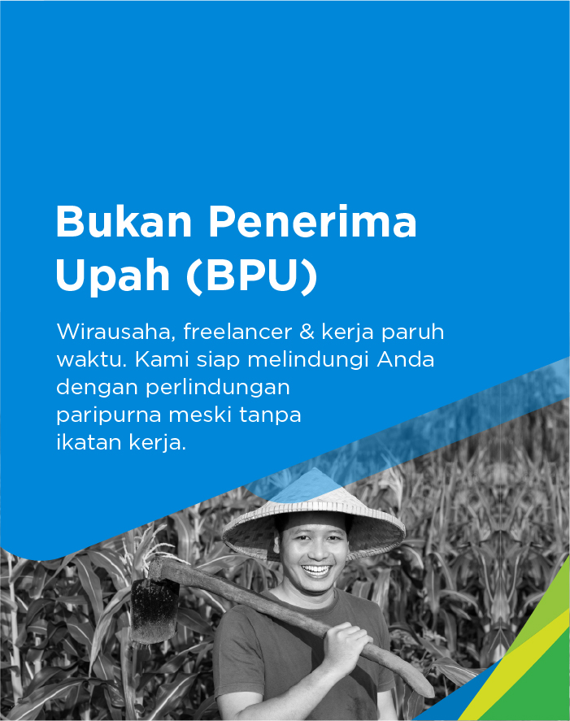

Manfaat JKM diberikan apabila peserta meninggal dunia dalam masa
kepesertaan aktif, terdiri dari :
- Santunan kematian sebesar Rp. 20.000.000,00 (dua puluh juta
rupiah);
- Santunan berkala yang dibayarkan sekaligus sebesar Rp.
12.000.000,00 (dua belas juta rupiah);
- Biaya pemakaman sebesar Rp. 10.000.000,00 (sepuluh juta rupiah);
dan
- Beasiswa untuk paling banyak 2 (dua) orang anak peserta dan
diberikan jika peserta telah memiliki masa iur minimal 3 (tiga)
tahun dan meninggal dunia bukan akibat kecelakaan kerja atau
penyakit akibat dengan ketentuan sebagai berikut :
- Diberikan berkala setiap tahun sesuai dengan tingkat
pendidikan anak dengan rincian sebagai berikut :
- Pendidikan TK sebesar Rp. 1.500.000,00/orang/tahun,
maksimal 2 (dua) tahun;
- Pendidikan SD/sederajat sebesar Rp.
1.500.000,00/orang/tahun, maksimal 6 (enam) tahun;
- Pendidikan SMP/sederajat sebesar Rp.
2.000.000,00/orang/tahun, maksimal 3 (tiga) tahun;
- Pendidikan SMA/sederajat sebesar Rp.
3.000.000,00/orang/tahun, maksimal 3 (tiga) tahun;
- Pendidikan tinggi maksimal Strata 1 (S1) atau pelatihan
sebesar Rp. 12.000.000,00/orang/tahun, maksimal 5 (lima)
tahun.
- Pengajuan klaim beasiswa dilakukan setiap tahun.
- Bagi anak dari peserta yang belum memasuki usia sekolah
sampai dengan sekolah di tingkat dasar pada saat peserta
meninggal dunia atau mengalami cacat total tetap, beasiswa
diberikan pada saat anak memasuki usia sekolah.
- Beasiswa berakhir pada saat anak peserta mencapai usia 23
(dua puluh tiga) tahun atau menikah atau bekerja.
 
